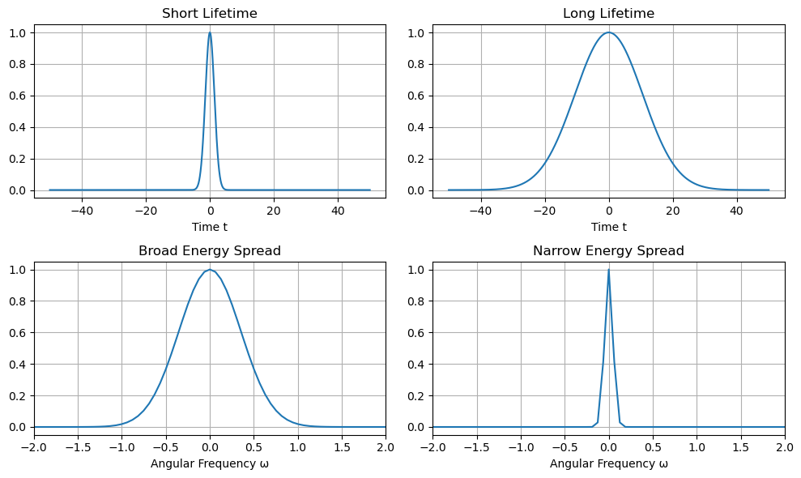

B9.3 The Heisenberg Uncertainty Principle#
B9.3.1 Motivation: Why the Uncertainty Principle?#
A Fundamental Limit of Nature#
In classical physics, we can imagine measuring a particle’s position and momentum as precisely as we want.
Quantum mechanics tells us this is not possible — not because of bad instruments, but because of the way nature works.
Waves, Not Tiny Billiard Balls#
Particles in quantum mechanics are described by waves.
And waves behave very differently from classical particles:
A wave that is perfectly spread out has a well-defined wavelength (and thus momentum).
A wave that is tightly localized needs many different wavelengths mixed together, making its momentum uncertain.
This is not a measurement error; it’s a built-in property of wave-like particles.
Why It Matters#
The uncertainty principle is not just a curiosity — it explains why the world is stable:
Atoms are stable: Electrons cannot collapse into the nucleus because confining them too tightly would make their momentum (and energy) enormously large.
Ground-state energies: It gives simple estimates for the lowest energy a particle can have when confined.
Short-lived particles: A particle that exists for only a short time has a naturally fuzzy energy.
Why Learn It Now?#
We just learned how to build wave packets using Fourier analysis.
The uncertainty principle is the direct consequence of that idea, and it will guide almost everything we do in quantum mechanics.
Understanding this principle will help us estimate energies, explain stability, and interpret quantum measurements.
B9.3.2 Why an Uncertainty Principle?#
From our study of Fourier analysis:
A narrow wave packet in \(x\) requires many \(k\) components.
Since \(p = \hbar k\), knowing position well (small \(\Delta x\)) means momentum is uncertain (large \(\Delta p\)).
This is not due to measurement errors — it is a fundamental property of wave-like particles.
Statement of the Principle#
Heisenberg’s Uncertainty Principle:
\(\Delta x\): standard deviation of position
\(\Delta p\): standard deviation of momentum
You cannot make both arbitrarily small at the same time.
In a full quantum treatment, an exponential decay \(e^{-t/2\tau}\) gives the precise minimum uncertainty
\(\Delta x\,\Delta p \ge \hbar/2\), but for our purposes an order-of-magnitude estimate \(\sim \hbar\) is sufficient.
B9.3.3 Applications#
Particle in a Box (Order-of-Magnitude Energy Estimate)#
For a particle confined in a region of size \(L\):
\(\Delta x \sim L\)
\(\Delta p \sim \hbar / L\)
Kinetic energy:
This rough estimate agrees with the exact quantum result for the lowest energy level (up to a factor of order 1).
Hydrogen Atom (Quick Estimate)#
Take \(\Delta x\) as the size of the electron orbit (Bohr radius \(r\)):
Total energy:
Minimize \(E(r)\) by setting \(dE/dr=0\) → recovers approximately the Bohr radius and ground-state energy.
Energy–Lifetime Relation (Fourier-Wave Packet Reasoning)#
The energy–time uncertainty is not quite like the position–momentum uncertainty, because time is not an operator in quantum mechanics. However, we can understand it naturally using the same Fourier-wave packet reasoning:
A Wave Packet in Time#
A wave of definite energy (frequency) lasts forever in time → perfectly sharp energy level.
But a state that exists only for a short time \(\Delta t\) must be built from many frequency components.
Fourier analysis gives:
Using \(E = \hbar \omega\):
Thus, a short-lived state has an intrinsic energy spread.
Physical Example: Spectral Line Broadening#
An excited atomic state that decays after a lifetime \(\tau\):
\(\Delta t \sim \tau\)
Energy width of the emitted photon:
So short-lived excited states produce broad spectral lines.

B9.3.4 Real Momentum vs Heisenberg Momentum Spread#
Students often ask:
“If a particle has some actual momentum, why do we talk about momentum uncertainty from Heisenberg? Are they the same thing?”
The Real (Mean) Momentum#
Every particle may have an average or mean momentum \(\langle p \rangle\).
For example, a moving electron might have \(\langle p \rangle = 10^{-24}\ \text{kg·m/s}\), corresponding to a well-defined average velocity.
Even in quantum mechanics, this mean momentum is just as “real” as in classical physics — it tells you the average motion of many identically prepared particles.
The Momentum Spread (Uncertainty)#
The Heisenberg uncertainty principle does not say that the particle has no real momentum.
Instead, it sets a limit on how sharply we can define it at the same time as the position:
\(\Delta p\) is the spread of momentum values you would find if you repeated the same measurement many times on identically prepared particles.
A particle can have a well-defined mean momentum and still have some spread in individual measurements.
Well-Defined vs. Smeared-Out Momentum#
Classical-like limit: If the wave packet is very broad in \(x\) (\(\Delta x\) large), then \(\Delta p\) can be extremely small → momentum is almost perfectly defined, as in classical physics.
Quantum limit: If we force the particle to be very localized (\(\Delta x\) small), many \(k\) components are needed → momentum values are smeared out.
Why and When Do We Compare Them?#
We often compare the Heisenberg momentum spread \(\Delta p\) to the mean momentum \(\langle p \rangle\) to judge whether:
Classical behavior is a good approximation:
If \(\Delta p \ll \langle p \rangle\), the particle behaves like it has a well-defined trajectory.Quantum effects dominate:
If \(\Delta p\) is comparable to or larger than \(\langle p \rangle\), the particle’s motion is strongly affected by quantum uncertainty.
Example:
In the double-slit experiment, we compare \(\Delta p_x\) (from localizing the particle to a slit) to the momentum spacing between fringes.
If \(\Delta p_x\) becomes comparable, the interference pattern is destroyed.
Key Concepts#
Real momentum: The average, classical-like motion of the particle.
Heisenberg momentum spread: The unavoidable quantum “fuzziness” around that mean.
Classical physics works when the spread is negligible compared to the mean; quantum effects dominate when it is not.
B9.3.5 Summary#
The uncertainty principle is a direct consequence of wave-packet behavior.
\(\Delta x \, \Delta p \gtrsim \hbar\) — you cannot know both perfectly.
This principle lets us estimate ground-state energies and predict energy broadening.